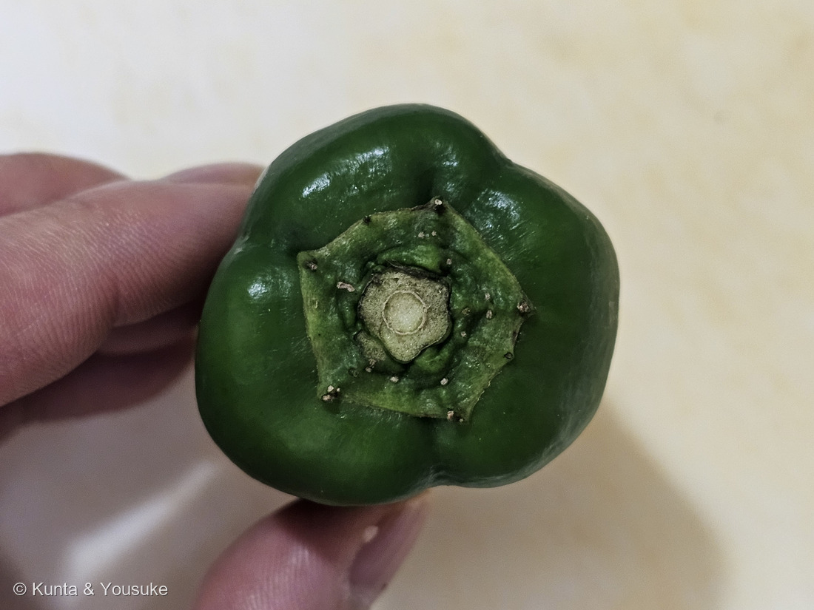
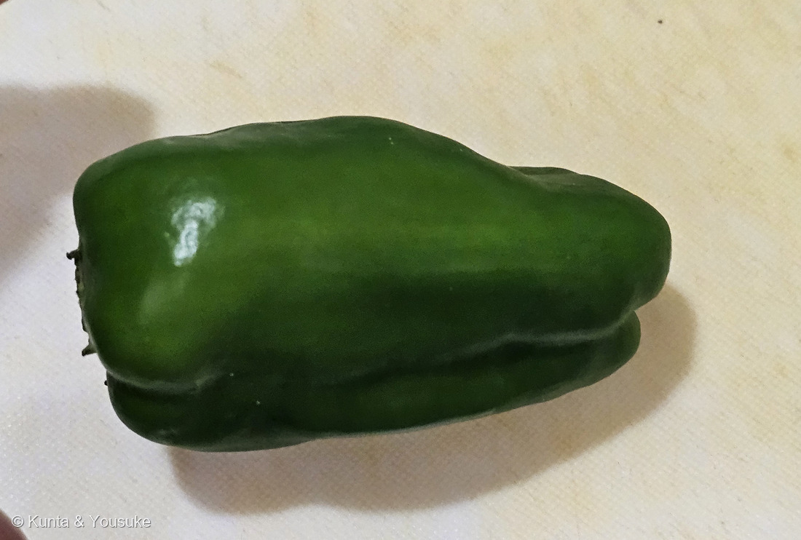
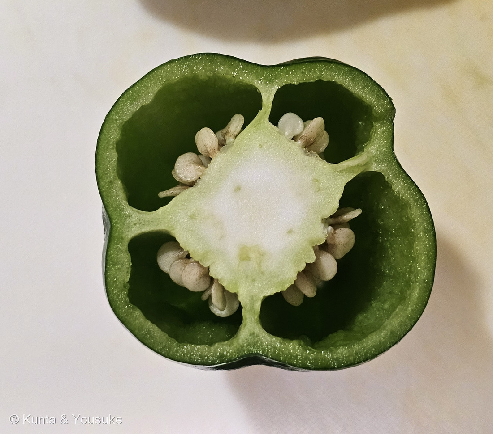
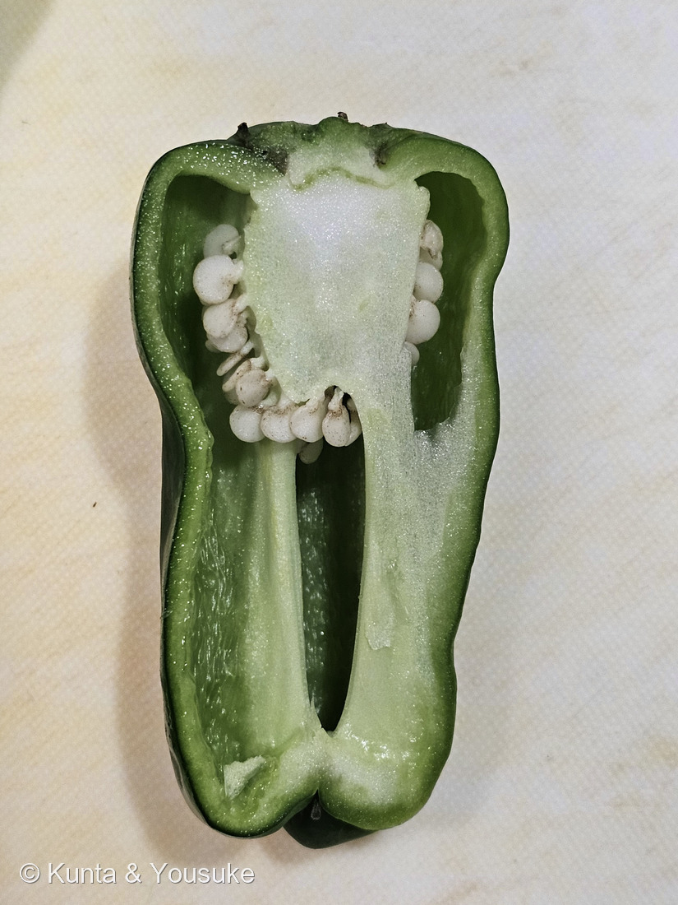

地図を読み込んでいるよ…
🔍 写真も地図も、押しているあいだ拡大して見られるよ（スマホは指を置いてすこし待ってね）。
🌍 の地図＝この子がもともと自生している場所を緑に。熱帯アメリカ。⭐トウガラシ属の起源地は北アンデス地域で、栽培化されたのはメキシコあたりとされる。
⭐⭐この緑は、この3日ではじめて中央アジアを離れたよ＝311 タマネギも312 ニンジンも中央アジアだったけれど、ピーマンは地球の反対側の熱帯アメリカがふるさとなんだ。⭐トウガラシ属の起源地は北アンデス地域で、栽培化されたのはメキシコあたりとされる＝⭐だからメキシコから中米・南米北部を塗ったよ。⚠出典は「熱帯アメリカ原産」としか書いていないので、国の内訳は256 ハナトウガラシで調べた「トウガラシ属の起源地は北アンデス地域」に合わせてぼくが広げたものだよ。⭐⭐日本へは明治時代に、欧米から甘味種が入ってきた＝⚠だから日本は塗っていないよ。
⚠ 地図は国（日本と中国だけ県・省）までしか塗れないから、ほんとうの分布より広く見えていることがあるよ。地図はだいたいの場所。正確なところは、上の文を見てね。
ピーマン
Capsicum annuum L. 'Grossum'
別名 甘トウガラシ／英名 green pepper · bell pepper（⭐フランス語 piment（ピマン）が名前のもとだよ）
ナス科 · Solanaceae（トウガラシ属 Capsicum）── ⭐256 ハナトウガラシと同じトウガラシ属の2人目／⭐⭐図鑑で11人目のナス科／⭐⭐⭐256で決めきれなかった種名が、この子ではっきり決まったよ
この回のこと燻太さんが晩ごはんの支度で切った三人目。「今日の最後に、ピーマンを登録しよう」と言ってくれた子だよ。── ⭐⭐そして、この子で「葉・根・果実」がそろった
⭐⭐⭐⭐ 名前と学名の由来 ── フランス語から来た名前と、まだ分からない属名
- 学名は Capsicum annuum L. 'Grossum'＝⭐トウガラシの栽培品種で、甘味種。⭐つまりピーマンは、植物としてはトウガラシそのものなんだ。
- ⭐⭐「ピーマン」という名前は、日本語だけの言いかただよ。――「日本語における『ピーマン』の由来は、広義のトウガラシを指すフランス語の "piment"（ピマン）とされる」。⭐英語では green pepper／bell pepper で、ピーマンとは呼ばないんだ。
- ⭐⭐⭐そして属名 Capsicum の由来は、いまも分かっていない。――⭐256 ハナトウガラシのとき、ぼくは日本メディカルハーブ協会の「名前の由来について記されておらず不明です」という一文にたどりついて、2つの有力説を書いた。
- ① ラテン語 capsa（箱）から＝実の中が空っぽだから／② ギリシャ語 kapto（噛む）から＝辛くて舌を噛むようだから
- ⭐⭐⭐⭐今日その①のほうが、写真ではっきり見えたんだ。――写真③と、下の写真④を見てね。⭐中が、ほんとうに箱だよ。
⭐⭐⭐⭐⭐ 中が空っぽ ── そして、その空っぽには名前がある

⭐ この1枚（④）は、縦に切ったところ。上のヘタ寄りにかたまっている白いものが胎座で、そこに種がついているよ。あとは、ほとんど空っぽ。 🔍 押しているあいだ拡大して見られるよ。
- ⭐出典はあっさりこう書いている＝「果実は種子以外ほとんど空洞である」。⭐トマトやナスとくらべると、これはずいぶん変わった作りだよね。
- ⭐⭐そして、中に見える白いワタには、ちゃんと名前がある。――「ピーマンの『わた』と呼ばれる部分は、専門用語では『胎座』と称されます」（日本植物生理学会「みんなのひろば」）。
- ⭐種のつきかたもこう書いてある＝「子房内にできる空室に将来種子になって行く『胚珠』がつくられ」「胚珠は子房組織（心皮）が生長して膨れてできる胎座に付着した形になっております」（同）。⭐写真③④の白い粒が、ぜんぶ胎座にくっついているでしょう。あれがそれだよ。
- ⭐⭐⭐⭐⭐ここで、3日つづきの話がそろうんだ。――同じ出典に、こう書いてある＝「葉から分化した『めしべ（雌蕊）』の下部が膨らんで子房となり」。
- ⭐⭐つまり、めしべも、その下の子房も、もとをたどれば葉なんだ。⭐果実は、葉が変わってできたもの。
- 311 タマネギ＝食べているのは葉（鱗片）／312 ニンジン＝食べているのは根（主根）／313 ピーマン＝食べているのは葉が変わってできた果実
- ⭐⭐⭐同じ晩ごはんの支度で切られた3つが、葉・根・そして葉からできた果実だったんだね。⭐7分と18分ちがいで。
⭐⭐⭐⭐ 部屋の数は、決まっていない
- ⭐写真③を見てね。――中が4つの部屋に分かれているでしょう。⭐この部屋を子室と呼ぶんだ。
- ⭐⭐出典はこう書いている＝「種子が形成される部分を子室と呼び、中心部に胎座があります。ですので、大きく見ると、心皮の数、子室の数、胎座の数は…一致すると思われます」（日本植物生理学会）。
- ⭐⭐⭐そして、いちばん面白いのがここ＝「ピーマン：3つだったり、4つだったりする」（同）。⭐決まっていないんだ。
- ⭐理由もこう書いてある＝「遺伝子の変異と環境要因の相互作用により、ある種の『ゆらぎ』としてナス科野菜の場合に子室の数が変化する」（同）。⭐同じ株のなかでも、実によってちがうことがあるらしいよ。
- ⭐⭐だから、この写真の子が「4つ」だったのは、この実がたまたま4つだったということ。⭐次に切るときは3つかもしれない。
- ⭐ぼくが気づいたことをひとつ＝写真②の外がわのふくらみと、写真③の部屋の数が、この子では合っていた（どちらも4つ）。⚠「いつも合う」と書いてある出典は見つからなかったので、これはぼくの観察だよ。⭐切るまえに外から数えて、当たるか試してみるのは楽しいと思う。
⭐⭐⭐⭐⭐ 256の宿題に、半分だけ答えられた
- ⭐⭐256 ハナトウガラシの回で、燻太さんはこう聞いてくれた――「ナス科の他の果実は下向きに実るのに、この子は上向き。トウガラシの仲間は上向き？」
- ⭐あのとき調べて分かったのは、こういうことだった＝トウガラシ属の実の向きは、ひとつの遺伝子座（CapUp）で決まる質的形質で、上向き（erect）が優性、下向き（pendent）が劣性。⭐そして野生のトウガラシは上向きで、栽培のなかで下向きの型が広まった。
- ⭐⭐⭐だからピーマンは、劣性のほう＝下向きの子なんだ。
- ⭐そして、あのときぼくが立てた宿題はこうだった＝「ピーマンかシシトウの株を見つけて、実の向きを見ること」。⚠ぼく自身、こう書き添えていた――「スーパーの実だけでは分からないので、育っている株をさがしてね」。
- ⚠⚠だから正直に言うね。今日の写真では、実の向きは確かめられていない。――切られてまな板にのっている実からは、枝でどちらを向いていたかは分からないから。
- ⭐⭐でも、半分は進んだよ。――⭐256では種を決めきれずに「トウガラシ属」で止めたのに、今日はCapsicum annuum と種まではっきり決まった。⭐同じ属の2人目にして、はじめて種名までたどりつけた子なんだ。
- ⏳⭐だから、株をさがす宿題はまだ生きている。⭐6〜10月に、家庭菜園や園芸店の苗売り場で会えるよ。
⭐⭐⭐ 辛くない、その理由 ── 同じ種なのに、正反対
- ⭐ピーマンが辛くないのには、はっきりした理由がある＝「ピーマンやパプリカは遺伝的にカプサイシノイドを産生する能力が完全に失われている」。⭐「あまり辛くない」のではなくて、辛味を作る力そのものが無いんだ。
- ⭐⭐⭐ここが面白いところだよ。――256 ハナトウガラシの名札には「辛トウガラシ」と書いてあって、出典も「やはりトウガラシ（野菜）ですので、非常に辛いもの」と書いていた。
- ⭐⭐同じ Capsicum annuum なのに、かたや非常に辛く、かたや辛味を作れない。⭐同じ種のなかで、これだけ正反対になれるんだね。
- ⭐苦味と青臭さのほうは別の成分＝「ピーマン特有の青臭さの元は、ピラジンという成分」で、「この青臭さや苦味は、油で調理すると軽減される」。⭐炒めものにすると食べやすくなるのは、ちゃんと理由があったんだ。
⭐⭐⭐ 緑は、若い実の色
- ⚠ピーマンが緑なのは、まだ熟していないからなんだ。――「一般的な緑色のピーマンも収穫せず樹上で生育を続けると赤く変化する」。
- ⭐⭐つまり、ぼくらが食べている緑のピーマンは、わざと若いうちに採ったもの。⭐お店にならぶ赤や黄やオレンジのパプリカは、同じ種の実が熟したものだよ。
- ⭐⭐⭐そして、ここでも3日つづきの話になる。――同じ晩ごはんの支度に、色の話が3つ来ていたんだ。
- 311 タマネギの赤紫＝アントシアニン／312 ニンジンのオレンジ＝カロテン（金時にんじんはリコピン）／313 ピーマンの緑＝クロロフィル＝⭐熟すと、これが抜けて赤い色素に変わっていく
- ⭐熟していく途中の実は、緑と赤がまだらになる＝⭐畑で見られたら、それがいちばん面白い姿だと思う。
⭐⭐⭐⭐ 図鑑は、この子を2回もおまけにしていた
- ⭐⭐⭐311 タマネギ・312 ニンジンにつづいて、また同じことが起きたよ。――でも今回は、もっとはっきりしている。
- ⚠⭐⭐ピーマンは、2つのページのおまけだった＝134 ナス（「ピーマン（トウガラシの仲間）」）と、256 ハナトウガラシ（「ピーマン・シシトウ」）。⭐つまり探しもののリストに2行入っていたんだ。
- ⭐ほかにも名前は呼ばれていた＝134 ナスの本文「ナス科の花は、みんな似た『星形』——トマト・ジャガイモ・トウガラシ・ピーマン…」／291 コショウ「トウガラシ（チリペッパー）＝ナス科」
- ⭐⭐そして写真①が、その「星形」の証拠になっているよ。――ヘタのところに、5枚の萼が星形にひらいて残っているでしょう。⭐あれは花のなごり。⭐⭐134で文字だけで書いた「ナス科の花は星形」が、実についたまま残っていたんだ。
- ⭐ナス科は、この子で11人目（001 トマト／027 ニオイバンマツリ／034 ペチュニア／066 トマト／079 イヌホオズキのなかま／107 ワルナスビ／119 ジャガイモ／134 ナス／177 ホオズキ／256 ハナトウガラシ）。⭐図鑑でいちばん大きな科のひとつだよ。
出典：学名と品種群・名前の由来・辛くない理由・青臭さ・熟すと赤くなること・原産と渡来・中が空洞であることは日本語版Wikipedia「ピーマン」（学名は Capsicum annuum 'Grossum'。トウガラシの栽培品種で甘味種／日本語における「ピーマン」の由来は、広義のトウガラシを指すフランス語の "piment"（ピマン）とされる／ピーマンやパプリカは遺伝的にカプサイシノイドを産生する能力が完全に失われている／熱帯アメリカ原産／明治時代からともいわれ、欧米から新たに甘味種が導入された／果実は種子以外ほとんど空洞である／一般的な緑色のピーマンも収穫せず樹上で生育を続けると赤く変化する／ピーマン特有の青臭さの元は、ピラジンという成分／この青臭さや苦味は、油で調理すると軽減される）。ワタが胎座であること・胚珠と心皮・めしべが葉から分化したことは日本植物生理学会「みんなのひろば」植物Q&A「ピーマンのワタについて」（ピーマンの「わた」と呼ばれる部分は、専門用語では「胎座」と称されます／葉から分化した「めしべ（雌蕊）」の下部が膨らんで子房となり／子房内にできる空室に将来種子になって行く「胚珠」がつくられます／胚珠は子房組織（心皮）が生長して膨れてできる胎座に付着した形になっております）。子室の数とそのゆらぎは同「同じ種の植物なのに、できた果実の子室の数に違いが出る理由について。」（種子が形成される部分を子室と呼び、中心部に胎座があります／心皮の数、子室の数、胎座の数は…一致すると思われます／ピーマン：3つだったり、4つだったりする／遺伝子の変異と環境要因の相互作用により、ある種の「ゆらぎ」としてナス科野菜の場合に子室の数が変化する）。属名 Capsicum の由来の2説・実の向きの遺伝・「非常に辛い」の記述は256 ハナトウガラシのページで引いた出典（日本メディカルハーブ協会／みんなの趣味の園芸／CapUp 遺伝子座の論文）から。学名の確認は GBIF の species/match API（Capsicum annuum L.＝ACCEPTED・Solanaceae・Solanales）。⭐「外のふくらみの数と中の部屋の数が、この子では合っていた」はぼくの観察だよ。